رنگ و تایپوگرافی با عمق: قبل و بعد
یک نسخهی تصمیمگرفتهشده. چیدمان، نشانهگذاری و اجزای خانه و صفحهی عنوان دست نخوردهاند؛ فقط مقدار توکنها عوض شده و هشت توکن تازه اضافه شده است. ایده: نور در تاریکی، و تاریکی دما دارد. زمین صفحه نیلیِ سرد است، هر سطح که به نور نزدیکتر میشود گرمتر میشود، مجله روی خاکسترِ گرم مینشیند، و کهربایی خانوادهی دوم است.
قبل و بعد
هر جفت در یک قاب با هم پیمایش میشود. تصویرهای ۱۴۴۰ با نصف اندازه نشان داده شدهاند.
خانه، ۳۶۰ پیکسل
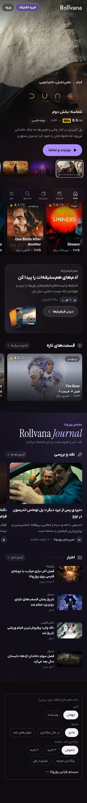
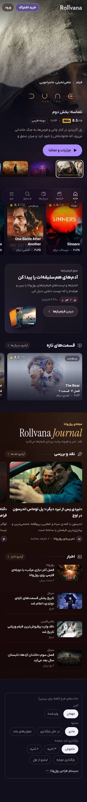
خانه، ۳۹۰ پیکسل
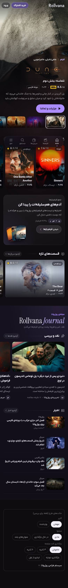
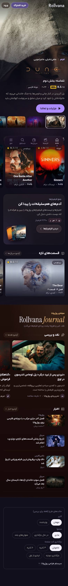
خانه، ۱۴۴۰ پیکسل
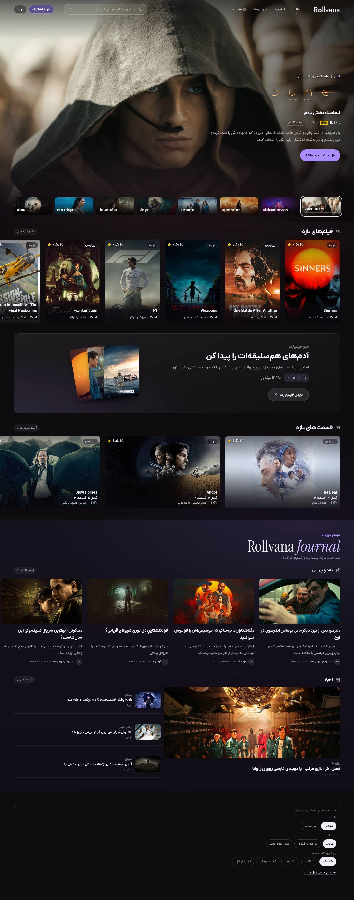
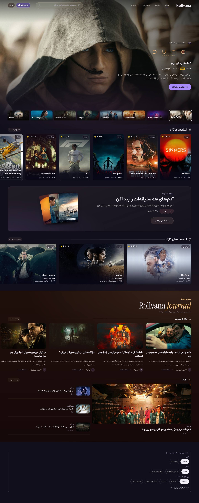
صفحهی فیلم، ۳۶۰ پیکسل
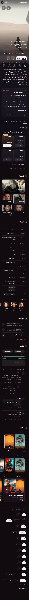
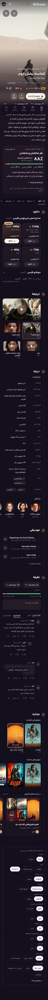
صفحهی فیلم، ۳۹۰ پیکسل
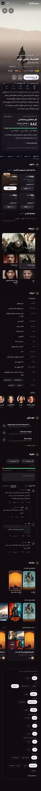
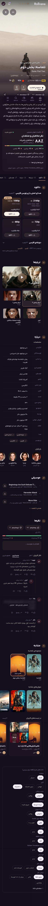
صفحهی فیلم، ۱۴۴۰ پیکسل
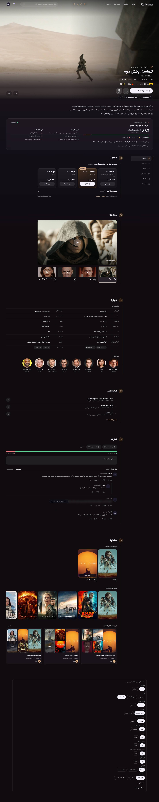
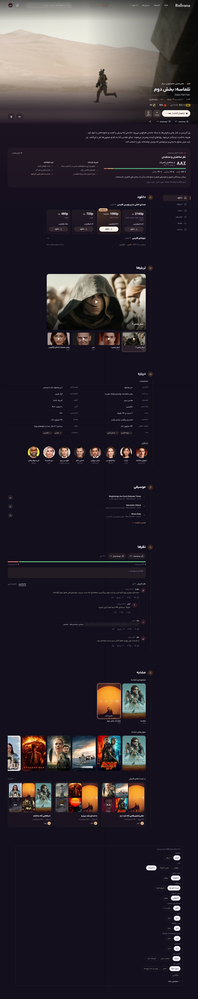
صفحهی سریال، ۳۶۰ پیکسل
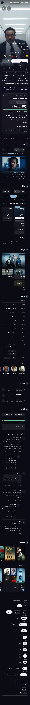
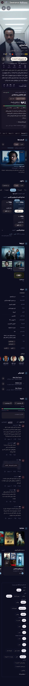
صفحهی سریال، ۳۹۰ پیکسل
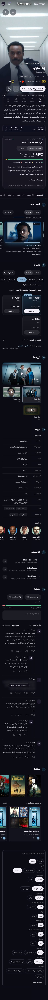
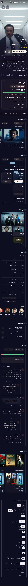
صفحهی سریال، ۱۴۴۰ پیکسل
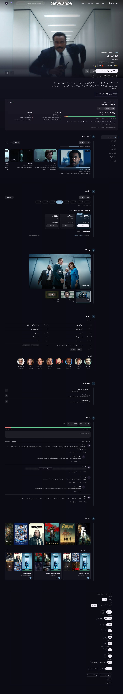
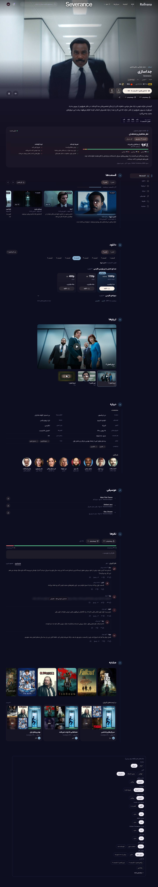
آزمون خاکستری
در خاکستری اینها از دست میرود: نوار مجله با زمین صفحه یکی میشود (نسبت روشنایی ۱٫۰۲ به ۱)، سرنوشته و واژهی کهربایی مجله مثل متن معمولی میشود، دکمهی پخشِ کرم با متن سفید یکرنگ میشود، متن خواندنیِ گرم و متن آرامِ یاسی فقط در روشنایی فرق میکنند، و دمای سطحها (نیلی، آلویی، بادمجانی) و نور گرم زمین صفحه و رنگی که از عنوان میآید ناپدید میشود. نشانههای برند (بنفش، IMDb، Rotten Tomatoes) هم مثل قبل.
خانه، ۳۹۰ پیکسل
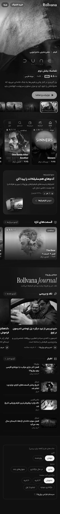
صفحهی فیلم، ۳۹۰ پیکسل
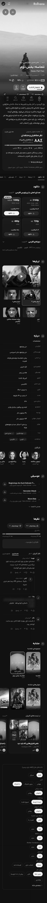
جدول الف: توکنهایی که مقدارشان عوض شد
نامها هماناند؛ اینها با جایگزینی tokens.css به سایت میرسند.
| نام | قبل | بعد | نقش |
|---|---|---|---|
--night-0 | #07060C | #080717 | زمین صفحه |
--night-1 | #0D0B15 | #110C1C | برگه، منو، نوار زبانه |
--night-2 | #15121F | #201222 | سطح بالاآمده |
--night-3 | #1E1A2B | #2F1A25 | کنترل |
--page | color-mix(in oklab,var(--acc) 6%,var(--night-0)) | color-mix(in oklab,var(--acc) 7%,var(--night-0)) | زمین صفحه با رنگ عنوان |
--surf | #151026 | #181022 | کارت خبر و نقد |
--surf-2 | #1C1532 | #241528 | هاور همان |
--surface-raised | #2A2535 | #33212E | آواتار جمع فیلمبازها |
--surface-band | #16121F | #1F0F0B | بالای نوار مجله |
--surface-band-end | #100D17 | #160909 | پایین نوار مجله |
--veil | rgba(7,6,12,.62) | rgba(8,7,23,.62) | پردهی پشت کارت و گفتوگو |
--fill-015 --fill-020 --fill-025 --fill-030 --fill-035 --fill-040 --fill-050 --fill-060 --fill-070 --fill-080 --fill-090 --fill-100 --fill-120 --fill-140 --fill-150 --fill-160 --fill-180 --fill-200 --fill-220 --fill-240 --fill-250 --fill-260 --fill-280 --fill-300 | rgba(242,239,248,a) | rgba(255,206,172,a) | پردهی سطح و لبه؛ شفافیتِ هر پله همان است |
--paper | #F4F1FA | #F8F2E9 | پرِ دکمهی پخش |
--ink-2 | rgba(242,239,248,.72) | rgba(246,238,228,.74) | متن خواندنی |
--ink-3 | rgba(242,239,248,.50) | rgba(208,200,238,.66) | متن آرام |
--ink-4 | rgba(242,239,248,.28) | rgba(208,200,238,.34) | نشانهی غیرمتنی |
--w-medium | 500 | 460 | وزن متن فرعی و ریز |
--w-semibold | 600 | 560 | وزن برچسب و کنترل دوم |
--w-bold | 700 | 660 | وزن کنترل اصلی و نامهای کوچک |
--w-heavy | 800 | 820 | وزن سرتیتر |
--t-display | var(--w-bold) var(--size-hero)/var(--lh-heading) var(--f-ui) | var(--w-heavy) var(--size-hero)/var(--lh-heading) var(--f-ui) | نقش نمایش |
--t-h1 | var(--w-bold) var(--size-title)/var(--lh-snug) var(--f-ui) | var(--w-heavy) var(--size-title)/var(--lh-snug) var(--f-ui) | نقش سرتیتر ۱ |
--t-h2 | var(--w-bold) var(--size-subhead)/var(--lh-normal) var(--f-ui) | var(--w-heavy) var(--size-subhead)/var(--lh-normal) var(--f-ui) | نقش سرتیتر ۲ |
--page-glow | #7850FF | #D9793A | هالهی زمین صفحه |
--t-display از ۱۰۲۴ | var(--w-bold) var(--size-splash)/var(--lh-compact) var(--f-ui) | var(--w-heavy) var(--size-splash)/var(--lh-compact) var(--f-ui) | نقش نمایش در دسکتاپ |
--t-h1 از ۱۰۲۴ | var(--w-bold) var(--size-showcase)/var(--lh-title) var(--f-ui) | var(--w-heavy) var(--size-showcase)/var(--lh-title) var(--f-ui) | نقش سرتیتر ۱ در دسکتاپ |
--t-h2 از ۱۰۲۴ | var(--w-bold) var(--size-title)/var(--lh-subtitle) var(--f-ui) | var(--w-heavy) var(--size-title)/var(--lh-subtitle) var(--f-ui) | نقش سرتیتر ۲ در دسکتاپ |
جدول ب: توکنهای تازه
فقط اینها در ساخت وب تغییر CSS جزء میخواهند.
| نام | مقدار | نقش | کدام جزء باید بخواند |
|---|---|---|---|
--amber | #F0BD7D | خانوادهی دوم، متن: مجله | JournalBand: سرنوشتهی «مجلهی رولوانا» (.magk) و واژهی مورب سرلوحه (.magt i)؛ قبلاً بنفش (--light و --light-hi) |
--band-glow | rgba(240,189,125,.10) | نور گوشهی نوار مجله | JournalBand: رنگِ گرادیان شعاعی (.mag)؛ قبلاً --light با ۱۰٪ |
--tr-display | -.02em | فاصلهی حروف پلهی نمایش | عنوان کاور صفحهی عنوان (.tc h1)؛ قبلاً نداشت |
--tr-heading | -.012em | فاصلهی حروف سرتیتر | سرِ ردیف (.rh h2)، سرتیتر فصل (.chh h2)، نام کیفیت (.dq b، .qh b)، سرتیتر آرشیو (.ah h1): قبلاً -.01em؛ سرتیتر جمع فیلمبازها (.lvt b): قبلاً نداشت |
--gap-in | 12px | سرِ گروه تا محتوایش | فاصلهی زیرِ سرِ ردیف (.rh)؛ قبلاً ۱۴ |
--gap-head | 16px، از ۱۰۲۴: 24px | سرتیتر فصل تا محتوایش | فاصلهی زیرِ سرتیتر فصل (.chap>.chh)؛ قبلاً ۲۴ و ۲۸ |
--gap-out | 40px، از ۱۰۲۴: 64px | میان دو فصل | فاصلهی بالای فصل (.chap)؛ قبلاً ۳۶ و ۶۴ |
--gap-tail | 24px | آخرِ فصل تا خطِ زیرش | فاصلهی پایین فصل در موبایل (.chap)؛ قبلاً ۸ |